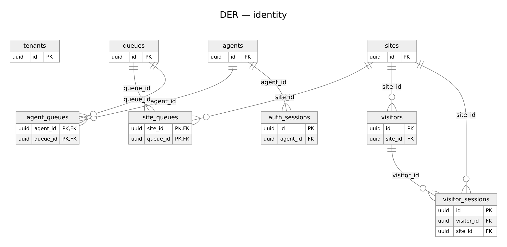
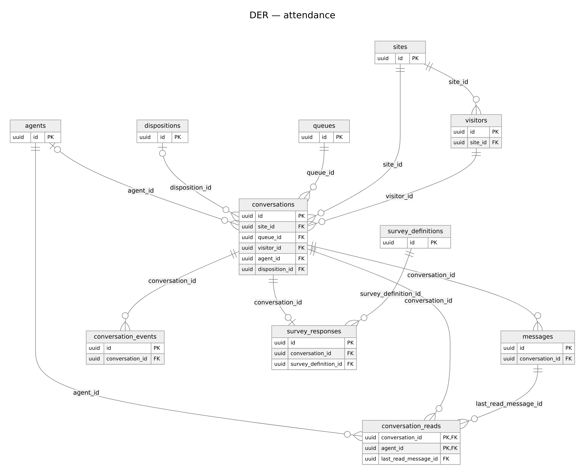
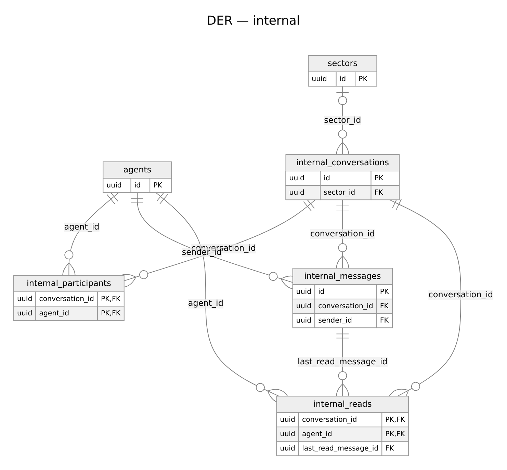
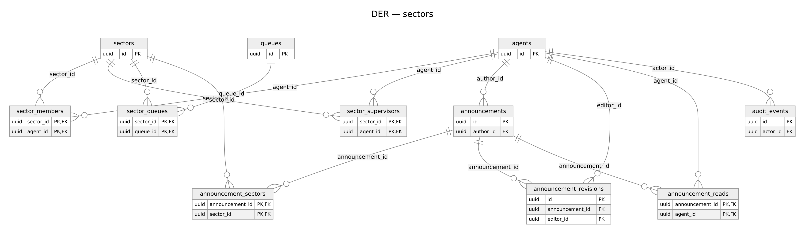
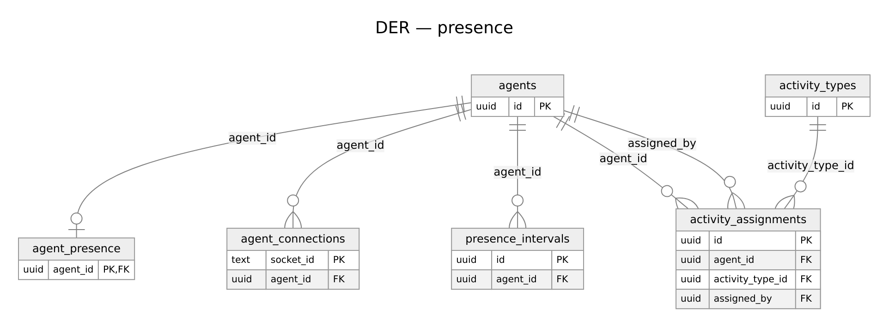

Relacionamentos
Todos os relacionamentos abaixo vêm das FKs reais (data-dictionary.md). Toda tabela de negócio também referencia tenants por tenant_id; essa aresta é omitida dos diagramas. Diagramas: DER geral (visão de conjunto, amplo: use zoom) e por domínio: identidade, atendimento, chat interno, setores e anúncios, presença e atividades.
| Domínio | Relação (pai → filho) | Cardinalidade |
|---|---|---|
| Tenants e usuários | tenants → sites, queues, agents, dispositions, survey_definitions |
1:N |
| Sites e filas | sites ⇄ queues via site_queues |
N:N |
| Agentes e filas | agents ⇄ queues via agent_queues |
N:N |
| Sessões | agents → auth_sessions; visitors → visitor_sessions; sites → visitors |
1:N |
| Atendimentos | sites, queues, visitors → conversations (obrigatórios); agents, dispositions → conversations (opcionais) |
1:N |
| Mensagens | conversations → messages, conversation_events |
1:N |
| Leitura | conversations + agents → conversation_reads (PK composta); messages → conversation_reads.last_read_message_id |
N:N |
| Pesquisa | conversations → survey_responses (1:1 por UNIQUE); survey_definitions → survey_responses |
1:1 / 1:N |
| Agentes e setores | sectors ⇄ agents via sector_members e via sector_supervisors |
N:N (remoção lógica) |
| Setores e filas | sectors ⇄ queues via sector_queues |
N:N — usado para escopo de supervisão |
| Chat interno | sectors → internal_conversations (grupo, 1:1 por setor); internal_conversations → internal_participants, internal_messages; agents → ambos |
1:N / N:N |
| Leitura interna | internal_conversations + agents → internal_reads; internal_messages → last_read_message_id |
N:N |
| Anúncios | agents (autor) → announcements; announcements ⇄ sectors via announcement_sectors; announcements → announcement_revisions (editor = agents), announcement_reads (agente) |
1:N / N:N |
| Presença | agents → agent_presence (1:1), agent_connections (1:N), presence_intervals (1:N) |
|
| Atividades | activity_types → activity_assignments; agents → activity_assignments (agente e assigned_by) |
1:N |
| Auditoria | agents (ator) → audit_events; resource_type/resource_id são polimórficos, sem FK |
1:N |
Observações de integridade: messages.sender_id é NULL se e somente se sender_type = 'system' e não tem FK (aponta para visitante ou agente conforme sender_type). audit_events.resource_id também não tem FK.
Diagramas referenciados





